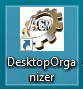
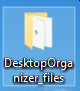

Este programa, DesktopOrganizer.exe, does not require installation.
Consequently it does not install any component or library on the PC: it uses default components present in any Windows installation, tested on XP, 7 and 10. It can be downloaded in any subdirectory (though the Desktop subdirectory is not recommended), and be executed from there.
Upon execution the following actions are performed:
- Creation of a direct link in the Desktop, associated with the following icon.

So, after first execution, it can be launched from this direct link.
- Creation of a subdirectory named "DestktopOrganizer_files", under the "Desktop" directory.
This subdirectory is where the program will look (at first instance) for "configuration files" when instructed to open one of them or for the creation of a new configuration file.
Because its location, the Destktop will include another direct link, as shown in the next figure.

- Creation of the association between files with extension "*.dto" and DesktopOrganizer.exe.
As a consequence, double-clicking the mouse on any "*.dto" file will open it immediately.